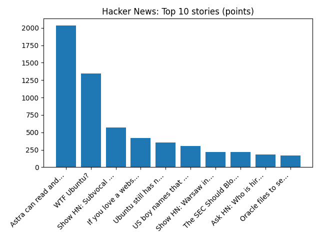

YOUR DAILY INTELLIGENCE BRIEF · 2026-11-03
The world, in focus.
No recent news coverage available.
🌍 Global coverage
🌌 Beyond Earth

Comet PanSTARRs and Rainbow Meteor
📜 On this day
- 2020 The 2020 United States presidential election takes place between Democratic Joe Biden and Republican incumbent President Donald Trump. On November 7, Biden was declared the winner.
- 2016 The Chicago Cubs beat the Cleveland Indians in the World Series, ending the team's 108-year-long title drought.
- 2014 One World Trade Center officially opens in New York City, replacing the Twin Towers after they were destroyed during the September 11 attacks.
- 1997 The United States imposes economic sanctions against Sudan in response to its human rights abuses of its own citizens and its material and political assistance to Islamic extremist groups across the Middle East and East Africa.
📈 Topic activity
Source health: 24/24 healthy
View original detailed report
Daily Knowledge Garden — 2026-11-03
🧭 Daily Summary
Global coverage includes Trump's Justice Dept identifies where US election monitors will be in the 50 states - Reuters; As Americans vote, Trump says US will stop $4 billion in aid to Israel - Reuters; Irish Olympian Ciara Mageean was a 'talented and inspirational human being'. Local coverage includes Virginia voters head to polls in pivotal midterm contests - FOX 5 DC; NoVA Daily: NBC4 Announces Jim Handly's Replacement, Here's Your Election Day Voting Guide - Northern Virginia Magazine.
🌍 Global News (cross-source)
- Trump's Justice Dept identifies where US election monitors will be in the 50 states - Reuters — Reuters — Headlines (Google News)
- As Americans vote, Trump says US will stop $4 billion in aid to Israel - Reuters — Reuters — Headlines (Google News)
- Irish Olympian Ciara Mageean was a 'talented and inspirational human being' — BBC — World
- US job postings jumped sharply in September, potentially a good sign for anyone seeking employment - AP News — AP — Business (Google News)
- Binance says fake job interviews used as part of $6.3bn crypto hack — BBC — Tech
🏙️ Local News
- Virginia voters head to polls in pivotal midterm contests - FOX 5 DC — Google News — Northern Virginia
- NoVA Daily: NBC4 Announces Jim Handly's Replacement, Here's Your Election Day Voting Guide - Northern Virginia Magazine — Google News — Northern Virginia
- Election Day Is Tuesday: Virginia’s Closest House Races, What’s on Your Ballot and How to Vote in Alexandria - Alexandria Living Magazine — Google News — Northern Virginia
- Carolyn Valerio Obituary (2026) - Edinburg, VA - Northern Virginia Daily - Legacy | Obituary — Google News — Northern Virginia
- Joyce Powell Obituary (2026) - Front Royal, VA - Northern Virginia Daily - Legacy | Obituary — Google News — Northern Virginia
🚀 Hacker News (Top 5)
- Astra can read and write weights to improve Qwen — 2031 points, 660 comments
- WTF Ubuntu? — 1348 points, 587 comments
- Show HN: Subvocal – Talk to your computer without making noise — 573 points, 311 comments
- If you love a website, back it up — 420 points, 96 comments
- Ubuntu still has not released patch for Linux 0day RCE in almost 3 weeks — 357 points, 87 comments

🌍 Wikipedia — On This Day (selected)
- 2020 — The 2020 United States presidential election takes place between Democratic Joe Biden and Republican incumbent President Donald Trump. On November 7, Biden was declared the winner.
- 2016 — The Chicago Cubs beat the Cleveland Indians in the World Series, ending the team's 108-year-long title drought.
- 2014 — One World Trade Center officially opens in New York City, replacing the Twin Towers after they were destroyed during the September 11 attacks.
- 1997 — The United States imposes economic sanctions against Sudan in response to its human rights abuses of its own citizens and its material and political assistance to Islamic extremist groups across the Middle East and East Africa.
- 1996 — Abdullah Çatlı, the leader of the Turkish ultranationalist organization Grey Wolves, dies in the Susurluk car crash, leading to the resignation of Interior Minister Mehmet Ağar (a leader of the True Path Party).
🎲 Wikipedia — Random Article
Gatineau Olympiques
The Gatineau Olympiques are a Canadian junior ice hockey team based in Gatineau, Quebec, that plays in the Quebec Maritimes Junior Hockey League (QMJHL). The Olympiques have appeared in the Memorial Cup seven times, winning the 1997 Memorial Cup.
https://en.wikipedia.org/wiki/Gatineau_Olympiques
🌌 NASA APOD
Comet PanSTARRs and Rainbow Meteor
Feed Health
- Reuters — Headlines (Google News): ok (15 articles)
- Reuters — World (Google News): ok (15 articles)
- Reuters — Business (Google News): ok (15 articles)
- BBC — World: ok (15 articles)
- BBC — Tech: ok (15 articles)
- BBC — Business: ok (15 articles)
- BBC — Science: ok (15 articles)
- AP — Headlines (Google News): ok (15 articles)
- AP — Politics (Google News): ok (15 articles)
- AP — Business (Google News): ok (15 articles)
- NPR — Top Stories: ok (10 articles)
- NPR — Politics: ok (10 articles)
- NPR — Business: ok (10 articles)
- NPR — Science: ok (10 articles)
- NPR — Technology: ok (10 articles)
- ScienceNews: ok (15 articles)
- ScienceDaily — Top: ok (15 articles)
- Nature — Technology: ok (15 articles)
- Google News — Northern Virginia: ok (15 articles)
- Google News — Northern Virginia traffic: ok (15 articles)
- Google News — Northern Virginia weather: ok (15 articles)
- Wikipedia — On This Day: ok (10 articles)
- Wikipedia — Random: ok (1 articles)
- NASA — APOD: ok (1 articles)
Runs so far today: 2